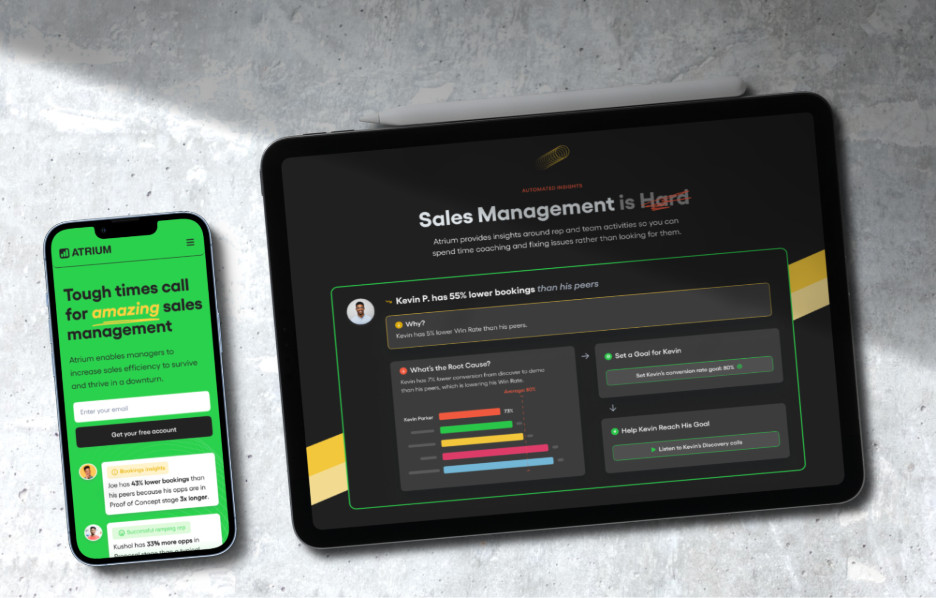
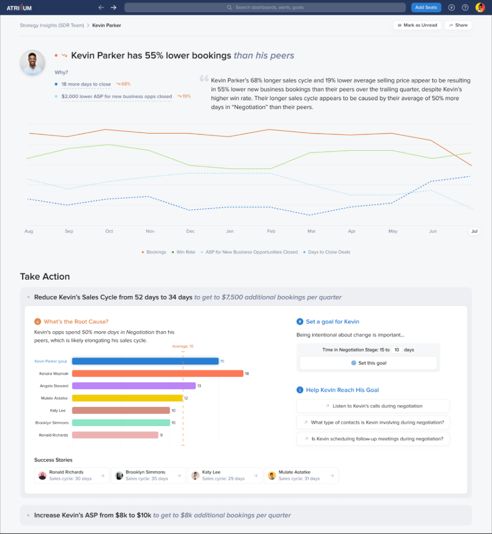
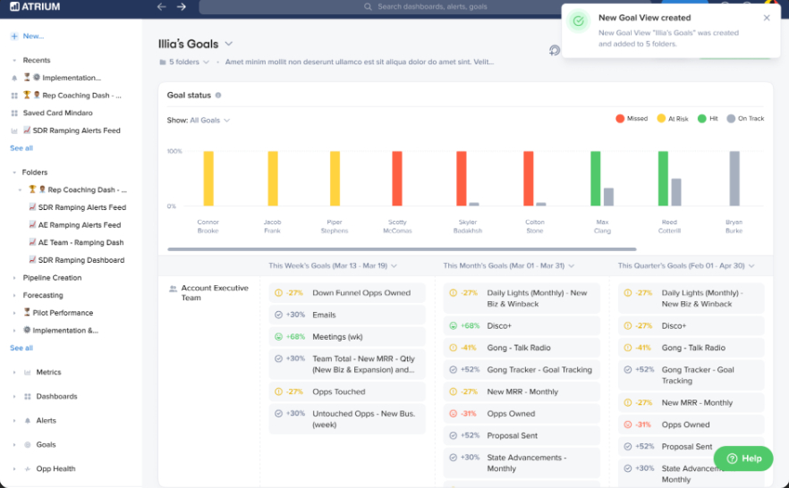
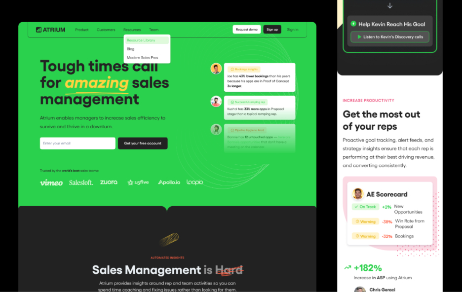
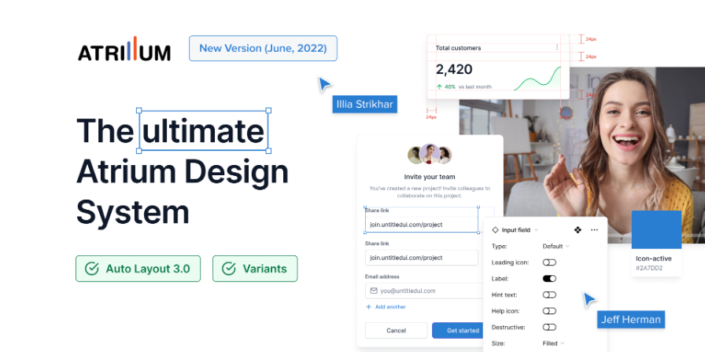
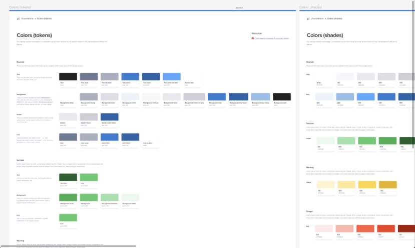
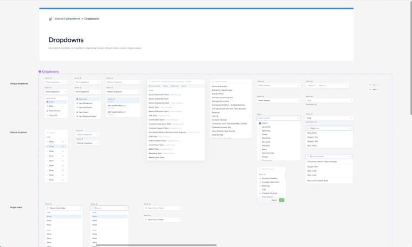

Atrium: sales management that explains itself
Overview
Atrium is an AI-powered sales management platform that helps teams build pipeline and hit quota. It reads CRM and communication data and turns it into insights about how each rep is doing — and what to do about it.
My role
Product designer. Core product features, the marketing site, and a design system shared by product, marketing, and engineering.
Team
Timeline
Feb 2022 – Aug 2024
via Toptal

The brief
Sales managers drown in dashboards. Atrium's bet was that a manager doesn't need another chart — they need to know which rep is slipping, why, and what to do this week. The data science was there. The product had to make it legible to someone with fifteen minutes between calls.
I joined as the product designer for two and a half years. The work split into three threads that kept feeding each other: new product features, the marketing site, and the design system that made both consistent.
Sales Coach
The flagship feature. Atrium already knew that "Kevin has 55% lower bookings than his peers". The hard part was the next line: why, and so what. The Sales Coach page answers in order — a plain-language headline, the two or three metrics that explain it, a trend over the year, and then a "Take Action" block with the root cause, a goal to set, and a short list of coaching prompts.
Every number links back to the underlying metric, so a sceptical manager can check the work. The AI never hides behind a summary.

Goals, meetings, org charts
Goal History & Recommendations
Goals used to be numbers in a spreadsheet nobody re-opened. The Goals view puts every rep's goals in one grid with status at a glance — missed, at risk, on track — and a history, so a manager can see whether a target was ambitious or just wrong. Atrium suggests the next goal from the data; the manager decides.

Meetings, Org Chart, Playbooks
Three more features from zero: a structured weekly sales meeting with insights pulled in automatically, an admin tool for managing org structures and team hierarchies, and Playbooks & Saved Metrics — customisable metric dashboards that let a team keep the views it actually uses.
atriumhq.com
I redesigned the marketing site for web and mobile. The product's green and the dark sections carry over from the app; animations and micro-interactions show the product moving instead of describing it. Product screens on the site are the real screens, built from the same components.

The Atrium Design System
Product, marketing, and engineering each had their own version of Atrium when I arrived. I built one system — colour tokens and shades, typography, components with variants and Auto Layout — and kept it current through a major rework in 2022. Engineers used it as the source of truth; marketing used the same components for the site.



Outcome
Over two and a half years Atrium went from a dashboard product to a coaching product. The features above shipped to 150+ sales teams, the site and the app finally looked like the same company, and engineering stopped asking "which blue". The Sales Coach layout — insight, evidence, action — is the pattern I still reach for whenever a product has to show AI output to someone who is allowed to disagree with it.
Screenshots are from a portfolio export; higher-resolution ones are on the way.